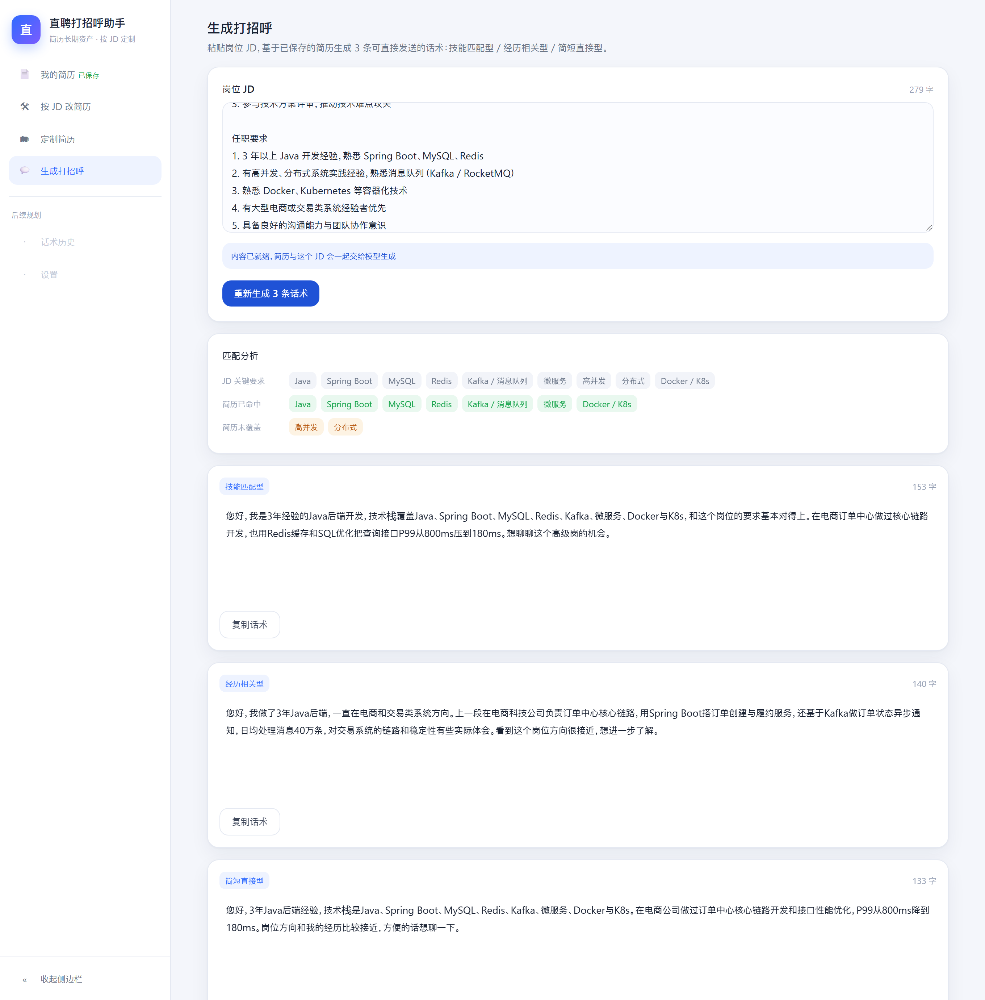
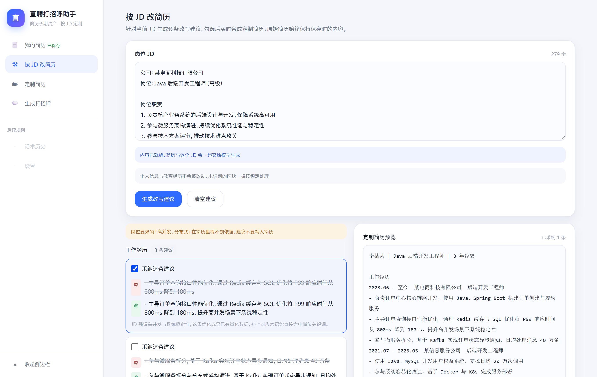

AI 产品经理作品集
直聘打招呼助手
给求职者的工具：粘贴一段岗位 JD，用已保存的简历生成 3 条可直接发送的打招呼话术，以及逐条可采纳的简历改写建议；改完的简历能按原文件的排版导出。 所有内容必须能在简历原文找到依据——编造即失败。
66 秒主流程：保存简历 → 生成话术与匹配分析 → 复制（自动入历史）→ 按 JD 改简历 → 存为定制简历。
一、问题与目标用户
求职者在直聊类平台主动投递时有两件重复劳动：
- 逐条写打招呼：复制同一段会被招聘者一眼看出模板，手写一条要 5–10 分钟，而招聘者通常只读前两句；
- 为每个岗位改简历：成本高于打招呼本身，多数人干脆一份通用简历投所有岗位。
现有通用 AI 写作工具的问题在于：要用户自己调提示词，且倾向产出「贵公司岗位非常感兴趣」这类无信息量套话，甚至编造简历里没有的经历和数字。
目标用户：互联网技术岗与产品岗的主动投递者——JD 硬性要求明确，与简历的对照关系最清晰，最容易验证生成质量。 目标：从粘贴 JD 到复制一条敢直接发送的话术 ≤ 30 秒。
依据强度：访谈已启动但只有 1 人（口径 ≥3 人），样本未达标，因此上面的痛点描述里仍有推演成分；这份记录把两处口径写细了，但没有推翻判断。这是复盘里的第一个短板。
二、四条关键判断
1. 不信任模型：把不可让渡的规则放在模型外面
个人信息与教育经历绝不允许被改写。最直接的做法是写进提示词，我没有这么做——模型是不可靠的执行者，越界是静默的。 最终方案是：模型只输出「原文 → 建议写法」的片段，替换由本地确定性代码执行，锚点匹配不上就丢弃。 这样「逐字不变」从一句依赖模型自觉的期望，变成了一条普通单元测试。
2. 先建评测，再调提示词
第一轮真实模型回归，8 组样本里违规 11 条。逐条归因后分成三类：只写长度区间没强调下限、检查器把「2022.06」误判为编造、模型把 JD 的年限要求写成用户自己的经验。 分别对应三种处置，修正后条级合规率 95.8%。这套归因链比「效果变好了」有用——每次改提示词，回归脚本会告诉你哪条规则退化了。
3. 把「复制率」从条级改成会话级
原目标「零修改直接复制率 ≥ 50%」的口径是被复制话术中未经编辑的比例，这个数天然接近 1/3——用户在三选一里挑一条发，等于要求每 2 条就有 1 条不用改。 改为会话级 ≥ 80%（这一次有没有拿到敢发的话），更贴合产品目标；条级 40% 降为质量辅助线。
4. 导出的保真度不靠重新排版，靠原地回填
用户要的是「和原来排版一样」的简历。把简历解析成结构化数据再渲染，那是重排——字体、页边距、表格、页眉页脚都得重新对齐，误差不可控。 我选的是相反方向：原文件当模板，只替换被采纳建议所在的那几行文字，其余字节原样保留。
三、被放弃的方案
| 看起来更省事的路 | 为什么不做 |
|---|---|
| 让模型自己「输出前自检」字数与数字 | 等于让它猜自己的输出：结论不可验证，还要为这段自审多付输出 token。数字是否出现在简历里、有没有用黑名单词，本地是几行确定性比较。 |
| PDF 先转 Word 再导出 | 转换本身是版面重建而非还原，同一份 PDF 用不同工具转出来的结果并不相同，导出结果不可预测。 |
| 在原 PDF 上覆盖改写 | 要嵌入中文字体，与「导出不触网」冲突；改写让文字变长还会溢出原行。 |
| 引入第二个模型做审核 | 既增加成本，又把「有没有编造」这个可判定的问题重新变成不可判定的问题。 |
四、评测体系
| 项目 | 结果 |
|---|---|
| 事实溯源 | 8 组样本 × 2 轮，0 例编造；数字、技能、学历均可在简历原文找到 |
| 话术条级合规率 | 95.8%（48 条中 2 条长度越界）。这是合规率不是质量率——它判不了「像不像真人写的」 |
| Word 往返一致性 | 不采纳任何建议时，导出文件的正文与原件逐字一致；导出件能被自己的导入通道重新解析 |
| 模型选型 | 同批 8 组样本跑了三个候选：在用的模型延迟与 token 用量都最低，另两个分别是它的 5.6 倍与 30 倍耗时，且质量并未更好 |
| AI 的增量 | 与纯规则基线（关键词匹配 + 模板）对照：规则版 22 处违规对模型版 6 处，重复句比例 0.514 对 0.03——模板方案的输出里一半的句子是原样复用的 |
| 外部盲测 | 待回收：评分表与汇总工具已就绪（8 组样本，含评分者一致率），3–5 人尚未完成 |
关键点：判定规则只有一份——线上逐条自检与离线质量回归调用同一个函数；提示词是目标，自检是红线。
五、结果

本地计算匹配分析（JD 关键要求 / 已命中 / 未覆盖），再流式出现 3 条话术。

建议逐条可采纳，右侧实时合成；个人信息与教育经历永远保持原文。
| 指标 | 目标 | 实测 |
|---|---|---|
| 首字到达 | ≤ 5 s | 0.46 s（16 次平均）；线上 2.20 s |
| 完整结果 | ≤ 30 s | 1.69 s（16 次平均）；线上 2.89 s |
| Word 保真导出 | ≤ 1 s | 48–60 ms（全程本地，断网可用） |
| 限流与配额 | 超限不消耗模型调用 | 压测三场景（60 / 200 / 160 个请求），模型调用数与配额完全一致 |
| 成本硬顶 | 公开传播可控 | 单日 300 次调用上限；一次完整生成约 1443 输入 + 596 输出 token |
部署形态：一个 Cloudflare Worker 同时托管前端与 API，同域、无 CORS；密钥只在 Worker Secret。 简历与 JD 只存在浏览器本地，服务端只转发不存储。
六、复盘：已知不足
- 用户侧证据缺失：没有访谈、问卷或竞品实测，痛点来自推演。这是当前最大的短板。
- 评测样本是自造的：8 组样本格式规整，没有真实简历的噪声（多栏、中英混排、排版混乱）。
- 核心价值指标没有真实数据：会话级复制率与建议采纳率的口径和采集已落地，但数据只存在用户本机、没有回流通道，目前为空。
- 单位经济性只到 token 实测：token 是实测值，但供应商单价未从账单核对，因此成本仍是公式而非结论。
- 保真导出只覆盖 Word 来源：PDF 与粘贴来源的用户只能拿到文本。
- 国内直连依赖 IPv6：IPv4 出口到 Cloudflare 的部分网段被阻断，纯 IPv4 网络需要代理。
补齐顺序：先用内测回收一批真实使用记录并请 3–5 人做外部盲测（评分工具已就绪），再做用户访谈把痛点从推演换成一手证据。
七、我的角色
本节待本人认领后填写
需要明确回答的四件事：产品定位与目标用户是怎么确定的、三条硬边界（禁止编造 / 锁定区块 / 不做自动发送）为什么不可让渡、 评测体系的设计意图、以及在实现过程中本人提出与验收了哪些部分。
没有这一节，读者无法判断哪些判断来自本人；这也是我在复盘里点出的、比缺数据更靠前的问题。